RAG clássico local e RAG por indexação com Claude
Dois sistemas de RAG sobre o mesmo acervo interno de relatórios e estudos. O RAG clássico roda inteiramente na infraestrutura própria e responde perguntas citando documento, setor e data de cada trecho, e o RAG por indexação consulta um catálogo de fichas do compartilhamento de arquivos para responder o que existe sobre um assunto, de que fonte e de quando.
- 30perguntas no gabarito de avaliação do RAG
- 4bases entre as quais cada pergunta é roteada
- 16passos no máximo no laço de consulta do índice
- 4níveis de curadoria atribuídos a cada arquivo
RAG clássico local
INGESTÃO
CONSULTA

AVALIAÇÃO

Pensado para documentos sensíveis que não podem sair da empresa, o RAG roda com todos os modelos na infraestrutura própria. O parsing converte cada PDF em Markdown com o opendataloader, e um modelo de visão local descreve imagens e gráficos em texto, inserindo a descrição no ponto exato da página de onde ela saiu. O chunking corta nos títulos, em trechos de 40 a 220 palavras com 40 palavras de sobreposição entre vizinhos, nunca parte tabelas ou imagens descritas e descarta sumários. O bge-m3 gera os embeddings e o pgvector guarda cada trecho com documento, setor e data.
Na consulta, as perguntas entram numa fila e são atendidas uma por vez, já que os modelos locais compartilham a mesma GPU. Um modelo roteia cada pergunta para uma das quatro bases, a recuperação híbrida une a busca vetorial por similaridade de cosseno à busca por palavras-chave, uma etapa de seleção descarta o que não é comparável e anexa um aviso temporal, e o Qwen3.6 de 35B escreve a resposta em streaming com citação numerada. Perguntas sobre o próprio acervo seguem um caminho determinístico e são respondidas sem busca.
Um framework de avaliação roda um gabarito de trinta perguntas, com a base correta conhecida de antemão, contra cada combinação de modelo, parâmetros de chunking e prompts de sistema. As respostas recebem notas de fidelidade, relevância e precisão do Ragas, dadas por um juiz neutro, o gemma3 de 27B, e o acerto de roteamento é contado diretamente. Cada execução vai para o MLflow com um span por etapa, mostrando onde cada configuração perde qualidade e onde perde tempo, e a avaliação roda em duas fases para que o modelo avaliado e o juiz não ocupem a GPU ao mesmo tempo.
RAG por indexação
INGESTÃO

CONSULTA

O índice responde que arquivos existem sobre um assunto, de que fonte e de quando, consultando um catálogo de fichas em vez de recuperar trechos por similaridade vetorial. A abordagem combina com o acervo, em que a maior parte do material é tabular e o significado de uma planilha está no nome do arquivo, na fonte e no cabeçalho, exatamente o que a ficha guarda.
O inventário percorre o compartilhamento de rede com checkpoint e uma lista de pastas ignoradas, e a sondagem amostra cada arquivo de acordo com o tipo, lendo o separador e as primeiras linhas de um CSV, as abas de uma planilha, o texto de apresentações e das primeiras páginas de PDF e o código de notebooks. A curadoria classifica cada arquivo em quatro níveis, com veredito auditável em TSV, e a extração é incremental, de modo que um arquivo só é reprocessado quando muda ou quando o extrator muda de versão. Um modelo de visão descreve as imagens uma única vez, em lote, transcrevendo o que está escrito em vez de estimar.
Cada arquivo vira uma ficha em Markdown com fonte, confidencialidade, período, colunas, amostra e nível de curadoria, organizada em coleções e grupos. Como o conteúdo não precisa ficar dentro da infraestrutura, o Claude navega o catálogo com ferramentas, decidindo o que buscar, abrir e ler em até dezesseis passos, e responde com o caminho do arquivo e o slide que sustenta cada número. A busca é BM25 com peso por campo, que favorece o título e depois o caminho, a fonte e as colunas, e cada pergunta e cada passo ficam registrados em SQLite.
O índice é servido por um servidor MCP para agentes e por uma página web para pessoas, que também documenta os modos de falha medidos contra um gabarito de vinte perguntas conferido arquivo por arquivo.
pgvector · bge-m3 · VLM e LLM locais · Claude · PostgreSQL · opendataloader · Ragas · MLflow · MCP · FastAPI